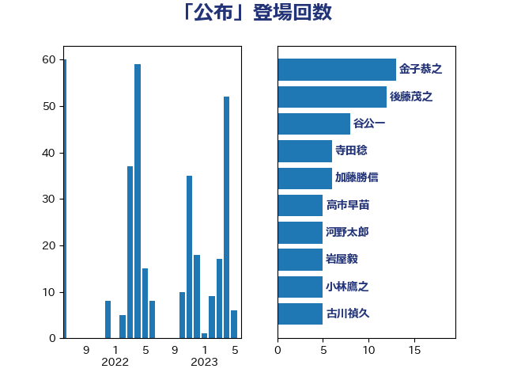

単語「公布」

| 金子恭之 | 自由民主党 | 13 回 |
| 後藤茂之 | 自由民主党 | 12 回 |
| 谷公一 | 自由民主党 | 8 回 |
| 寺田稔 | 自由民主党 | 6 回 |
| 加藤勝信 | 自由民主党 | 6 回 |
| 高市早苗 | 自由民主党 | 5 回 |
| 河野太郎 | 自由民主党 | 5 回 |
| 岩屋毅 | 自由民主党 | 5 回 |
| 小林鷹之 | 自由民主党 | 5 回 |
| 古川禎久 | 自由民主党 | 5 回 |
| 足立康史 | 日本維新の会 | 4 回 |
| 篠原孝 | 立憲民主党 | 4 回 |
| 小里泰弘 | 自由民主党 | 4 回 |
| 三ッ林裕巳 | 自由民主党 | 4 回 |
| 森屋宏 | 自由民主党 | 3 回 |
| 松本剛明 | 自由民主党 | 3 回 |
| 岸田文雄 | 自由民主党 | 3 回 |
| 安江伸夫 | 公明党 | 3 回 |
| 鷲尾英一郎 | 自由民主党 | 2 回 |
| 高鳥修一 | 自由民主党 | 2 回 |
| 鎌田さゆり | 立憲民主党 | 2 回 |
| 鈴木英敬 | 自由民主党 | 2 回 |
| 逢沢一郎 | 自由民主党 | 2 回 |
| 逢坂誠二 | 立憲民主党 | 2 回 |
| 西田昌司 | 自由民主党 | 2 回 |
| 萩生田光一 | 自由民主党 | 2 回 |
| 義家弘介 | 自由民主党 | 2 回 |
| 緒方林太郎 | 無所属 | 2 回 |
| 石井章 | 日本維新の会 | 2 回 |
| 田村憲久 | 自由民主党 | 2 回 |
| 牧島かれん | 自由民主党 | 2 回 |
| 沢田良 | 日本維新の会 | 2 回 |
| 橋本岳 | 自由民主党 | 2 回 |
| 末松信介 | 自由民主党 | 2 回 |
| 日下正喜 | 公明党 | 2 回 |
| 斉藤鉄夫 | 公明党 | 2 回 |
| 山本香苗 | 公明党 | 2 回 |
| 山崎正恭 | 公明党 | 2 回 |
| 小西洋之 | 立憲民主党 | 2 回 |
| 宮崎政久 | 自由民主党 | 2 回 |
| 宮下一郎 | 自由民主党 | 2 回 |
| 大西英男 | 自由民主党 | 2 回 |
| 塩川鉄也 | 日本共産党 | 2 回 |
| 吉田久美子 | 公明党 | 2 回 |
| 佐藤茂樹 | 公明党 | 2 回 |
| 伊藤孝恵 | 国民民主党 | 2 回 |
| 中司宏 | 日本維新の会 | 2 回 |
| 上野賢一郎 | 自由民主党 | 2 回 |
| 三木圭恵 | 日本維新の会 | 2 回 |
| 齋藤健 | 自由民主党 | 1 回 |
| 鰐淵洋子 | 公明党 | 1 回 |
| 馬場伸幸 | 日本維新の会 | 1 回 |
| 青山繁晴 | 自由民主党 | 1 回 |
| 長友慎治 | 国民民主党 | 1 回 |
| 野村哲郎 | 自由民主党 | 1 回 |
| 近藤和也 | 立憲民主党 | 1 回 |
| 輿水恵一 | 公明党 | 1 回 |
| 西村智奈美 | 立憲民主党 | 1 回 |
| 茂木敏充 | 自由民主党 | 1 回 |
| 若宮健嗣 | 自由民主党 | 1 回 |
| 舟山康江 | 国民民主党 | 1 回 |
| 羽田次郎 | 立憲民主党 | 1 回 |
| 笹川博義 | 自由民主党 | 1 回 |
| 石垣のりこ | 立憲民主党 | 1 回 |
| 石井苗子 | 日本維新の会 | 1 回 |
| 田中健 | 国民民主党 | 1 回 |
| 牧山ひろえ | 立憲民主党 | 1 回 |
| 牧原秀樹 | 自由民主党 | 1 回 |
| 浮島智子 | 公明党 | 1 回 |
| 浜地雅一 | 公明党 | 1 回 |
| 津島淳 | 自由民主党 | 1 回 |
| 河西宏一 | 公明党 | 1 回 |
| 森田俊和 | 立憲民主党 | 1 回 |
| 柴田巧 | 日本維新の会 | 1 回 |
| 林芳正 | 自由民主党 | 1 回 |
| 東徹 | 日本維新の会 | 1 回 |
| 東国幹 | 自由民主党 | 1 回 |
| 木原誠二 | 自由民主党 | 1 回 |
| 新藤義孝 | 自由民主党 | 1 回 |
| 斎藤洋明 | 自由民主党 | 1 回 |
| 斎藤アレックス | 国民民主党 | 1 回 |
| 平口洋 | 自由民主党 | 1 回 |
| 川田龍平 | 立憲民主党 | 1 回 |
| 川合孝典 | 国民民主党 | 1 回 |
| 岡本あき子 | 立憲民主党 | 1 回 |
| 山田宏 | 自由民主党 | 1 回 |
| 山田勝彦 | 立憲民主党 | 1 回 |
| 山本博司 | 公明党 | 1 回 |
| 山口壯 | 自由民主党 | 1 回 |
| 山下貴司 | 自由民主党 | 1 回 |
| 小倉將信 | 自由民主党 | 1 回 |
| 寺田静 | 無所属 | 1 回 |
| 大島九州男 | れいわ新選組 | 1 回 |
| 大塚耕平 | 国民民主党 | 1 回 |
| 塩村あやか | 立憲民主党 | 1 回 |
| 城井崇 | 立憲民主党 | 1 回 |
| 吉田統彦 | 立憲民主党 | 1 回 |
| 勝俣孝明 | 自由民主党 | 1 回 |
| 務台俊介 | 自由民主党 | 1 回 |
| 前川清成 | 日本維新の会 | 1 回 |
| 伊波洋一 | 無所属 | 1 回 |
| 仁比聡平 | 日本共産党 | 1 回 |
| 井林辰憲 | 自由民主党 | 1 回 |
| 井上哲士 | 日本共産党 | 1 回 |
| 上川陽子 | 自由民主党 | 1 回 |
| 三宅伸吾 | 自由民主党 | 1 回 |
| 三上えり | 立憲民主党 | 1 回 |
| 一谷勇一郎 | 日本維新の会 | 1 回 |
| こやり隆史 | 自由民主党 | 1 回 |
| あかま二郎 | 自由民主党 | 1 回 |